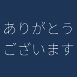

emo '猫に\小判'
emo 'ありがとう\ございます'
テキストから Slack 絵文字を生成するツール —
ayato-p/slack-emoji-cli
| commit: d93b5a3
| コマンド | 出力 |
|---|---|
emo '猫に\小判' |
|
emo 'ありがとう\ございます' |
 |
| 背景色 | コマンド | 出力 |
|---|---|---|
デフォルト (#1D3557) |
emo 'お気持ち' |
 |
赤 (#E63946) |
emo --bg '#E63946' 'LGTM' |
 |
緑 (#2ECC71) |
emo --bg '#2ECC71' '完了' |
 |
オレンジ (#F39C12) |
emo --bg '#F39C12' '注意' |
 |
紫 (#6C3483) |
emo --bg '#6C3483' 'WIP' |
 |
| コマンド | 出力 |
|---|---|
emo --rotate 'LGTM' |
 |
emo --rotate '猫に\小判' |
|
emo --rotate --bg '#E63946' '完了' |
 |
| コマンド | 出力 |
|---|---|
emo '猫' |